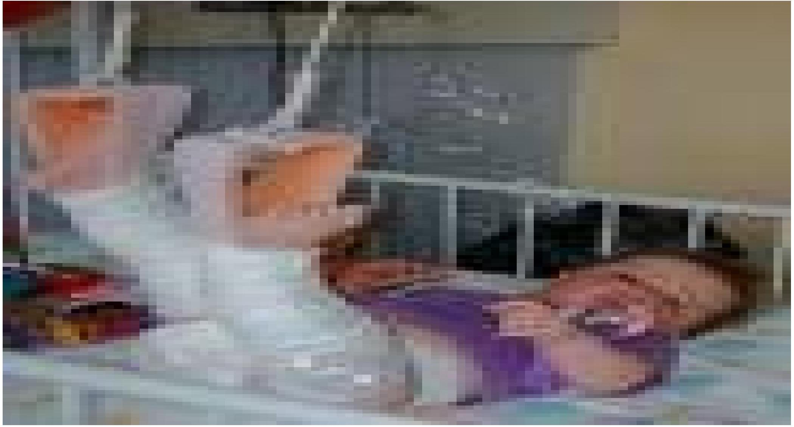
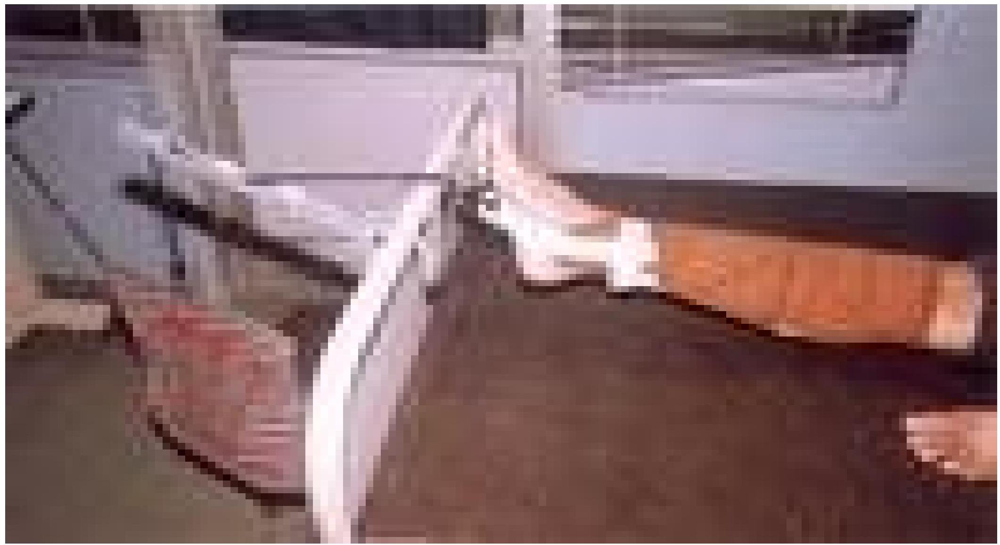
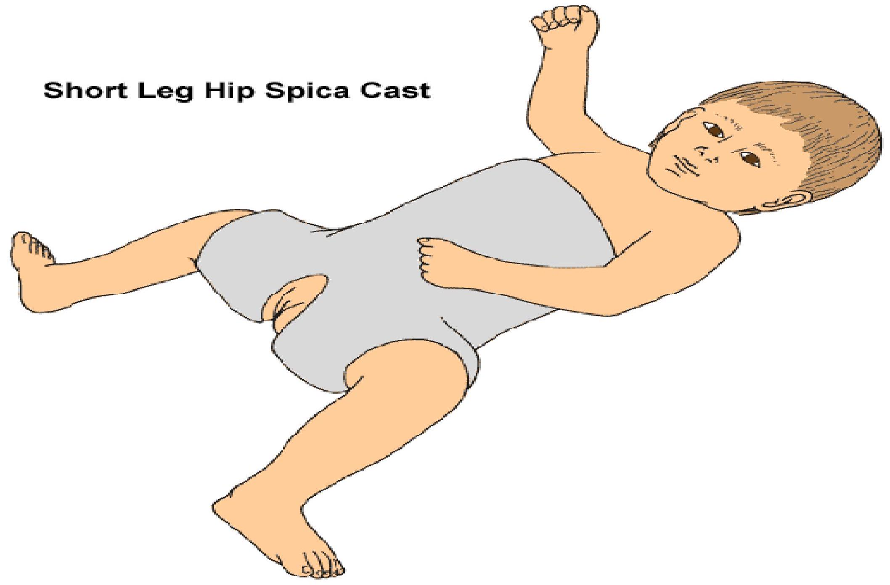
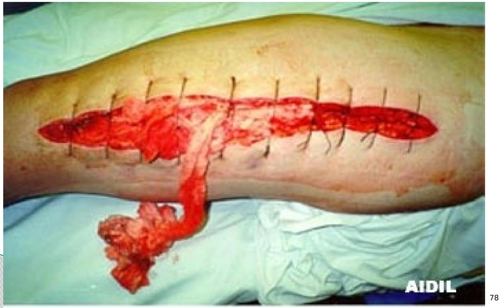
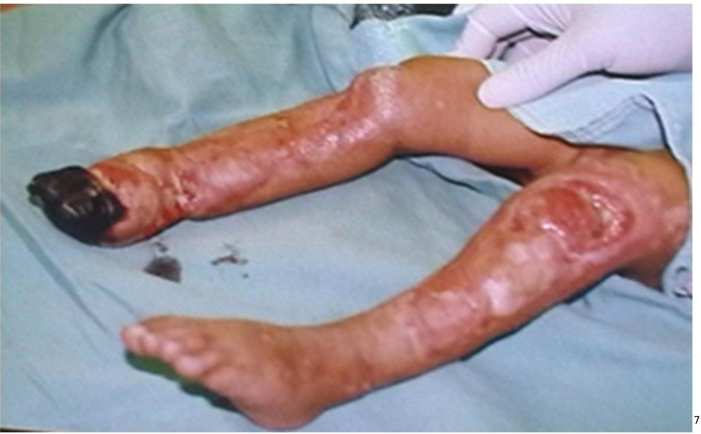

ORTHOPEDIC NURSING
BY JANE TERER
COURSE OBJECTIVES
MAIN OBJECTIVE
By the end of this Course, the learner will gain the necessary knowledge, skills and attitudes to promote health, prevent illness, diagnose, coordinate, manage and rehabilitate infants, children and adults suffering from orthopedic conditions.
SPECIFIC OBJECTIVES
- Revise the structure and functions of the different tissues that compose the musculoskeletal system.
- Outline bone healing
- Describe the components of the nursing assessment, formulate a nursing diagnosis and give appropriate care to the person with musculoskeletal conditions; including: congenital talipes, osteogenic imperfect, hip dysplasia, rheumatoid arthritis, osteomylitis, TB of spine, scoliosis, ankylosis, traumatic fractures (potts, colles, humerus, radial/uma pelvis, hip, femoral shaft/neck, tibia/fibula, spine, bone neoplasm's, degenerative osteoporosis)
- Explain the diagnostic test indicated for the person with musculoskeletal problem, the rationale for each test and appropriate nursing responsibilities associated with each test.
- Describe the role of the nurse in the management of fractures and prevention of fracture-related complications.
Supporting Objectives
- Review basic anatomy and physiology of bones and joints related to Orthopaedic nursing
- Describe fractures and soft tissue injuries
- Describe Orthopaedic inflammatory conditions:
- Osteomyelitis
- Rheumatoid Arthritis
- Osteoarthritis
- Pyogenic arthritis
- Gout
- Osteoporosis
- Describe musculoskeletal system tumors
- Describe congenital abnormalities of the musculoskeletal system (Talipes and Congenital hip dislocation/hip dysplsia), osteogenic imperfect
- Care of the patient undergoing amputation
INTRODUCTION
Orthopedics is the branch of medicine that deals with disorders or deformities of the skeletal system and associated muscles, joints and ligaments.
Orthopedic Nursing is a specialty focused on prevention and treatment of musculoskeletal disorders using the appropriate and scientific based nursing care.
ANATOMY AND PHYSIOLOGY OVERVIEW
The Musculoskeletal system function is interdependent with other body systems
The bony skeleton provides a supportive framework for body structures.
Bones also stores Ca2+ (98%), Phosphorous, magnesium and fluoride ions.
- Red bone marrow produce red and white blood cells (Hematopoiesis)
- Joints hold bones together and allow movement.
- Muscles attached to bones helps moves bones and aid in heat production (maintain body temperature)
Bone Cell Types:
- (i) Osteoblasts for bone formation
- (ii) Osteocytes for bone maintenance
- (iii) Osteoclasts for destroying, resorbing and remodeling bone substance
Other related concepts
Ligaments
Ligaments are parallel bands of flexible, dense fibrous connective tissue whose primary function is to connect the articular ends of bones and provide stability.
They permit movement in some directions but limit movement in other directions hence preventing joint injury, as is the case with knee and hip joints.
Ligaments also attach to soft tissue to suspend structures e.g. the Suspensory ligament of the ovaries.
Tendons
Tendons are bands of dense fibrous tissues forming the origin and insertion of muscles.
They are aligned with sheaths, which is again lined with synovial membrane that provide lubrication for each tendon movement.
The sheaths enclose certain tendons especially in the wrist and ankle.
Fascia
This is a sheet of loose connective tissue that may be found directly under the skin as superficial fascia or as a sheet of dense fibrous connective tissue making up a sheath of muscles, nerves and blood supply.
Bursae
Are small sacs of connective tissue located whenever pressure is exerted over moving parts, hence preventing injury to muscle tendons.
Bursae are lined with synovial membranes and contain synovial fluid, which acts as a cushion between the moving parts.
Joints
Are of three major types:
- (i) Fibrous (Synarthroses) joints: Allows no movement at all e.g. the sutures of the Skull.
- (ii) Amphiarthroses (Cartilaginous) joints: Allows little movement e.g. the intervertebral joints and the joints at the pubic symphysis.
- (iii) Diathroses (Synovial): Allows free movements e.g. the main joints.
Bone Formation and Healing
Factors affecting bone formation
1. Factors influencing/responsible for bone formation:
- Calcium level
- Phosphorus
- Enzyme Alkaline phosphatase (ALP)
- Calcitonin
- Vit. D
- PTH
- Growth Hormone (GH)
- Glucocorticoids (Cortisol)
- Sex hormone (Estrogen, Androgens)
Factors limiting bone formation
- Infection and inflammation
- Activity and Weight bearing
PHYSIOLOGY OF BONE HEALING
The process of bone healing is known as Callus Formation. Fractures and surgical interruptions of bone both heal by the same process and occurs in five major stages as follows:
- Hematoma formation
- Fibrin meshwork formation
- Invasion of oesteoblast
- Callus formation
- Remodeling
1. Hematoma formation
Because bone is highly vascular, bleeding occurs at both ends of the fractured bone. Increased capillary permeability permits further extravasation of blood into the injured area. Blood or periosteal sheath or adjacent tissue and between the broken ends.
2. Fibrin meshwork formation
Fibroblast invade the hematoma forming a fibrin meshwork.
White blood cells wall off the area localizing the inflammation.
3. Invasion of oesteoblast
As oesteoblasts invade the fibrous union to make it firm, blood vessels develop from capillary buds, thereby establishing a supply for nutrients to build collagen and granulation tissue is formed.
Collagen strands become longer and begin to incorporate Ca2+ deposits leading to formation of cartilage.
4. Callus formation
Osteoblasts form a woven bony structure known as callus.
The osteoblasts continuously lay a network for the build up of bone, while osteoclasts destroy dead bone and help in the synthesis of new ones. Ca2+ and phosphorus are deposited as mineral salts.
5. Remodeling
Excess callus is reabsorbed and new bone is laid down.
This is important because bone that has not undergone remodeling lacks the mechanical properties necessary for weight bearing.
Factors impeding callus formation
- Inadequate/poor reduction of the fracture
- Excessive edema at the fracture site impeding the supply of nutrients to the area of injury.
- Excessive bone loss at the time of injury, which prevents sufficient bridging of the broken ends.
- Inefficient immobilization
- Infection at the site of injury.
- Bone necrosis.
- Anemia or other systemic conditions.
- Endocrine imbalance.
FRACTURES
A fracture is a discontinuity or break in a bone related to a blow, fall, accident, stress or disease process.
Avulsion fractures occur when a strong ligament or tendon pulls a fragment of bone away from the rest of bone.
Broken bones affect other adjacent structures.
Effects of fractures
- Soft tissue edema
- Hemorrhage into muscles and joints
- Joint dislocation
- Ruptured tendons
- Severed nerve
- Damaged blood vessels
- Damaged body organs
Classification/Types of fractures
Fractures can either be:
- Complete: There is a break across the entire bone;
- Incomplete: Breakage occur partially;
- Closed fracture: There is breakage but the skin remains intact; OR,
- Open fracture: Involves the skin or mucus membrane
Complete fractures
Complete fractures can be/includes
- Simple(Closed)
- Compound(Open)
- Comminuted (Involves more than two fracture fragments)
- Linear
- Oblique
- Spiral
- Transverse
- Impacted
- Pathological
- Avulsion
- Extracapsular
- Intracapsular
Incomplete fractures
Incomplete fractures include
- (i) Greenstick fracture
- Torus fracture: There is buckling of the cortex caused by impaction;
- Bowing fracture: The bone becomes curved along its longitudinal axis; OR
- A transverse fracture occurring in the cortex and extending into the midportion of the bone but then becomes oriented along the longitudinal axis of the bone without disrupting the opposite cortex.
- (ii) Stress fracture: A very small crack in bone caused by unusual or repeated stress or heavy continuous weight on the ankle or leg; typically occurs in weight-bearing bones, such as the tibia and metatarsals bones and is a common sports injury, mostly associated with athletics.
- (iii) Transchondral fracture: Involves entire thickness of cartilage down to subchondral
Grading of Open fractures
Open fractures can be graded according to level/degree of contamination as follows:
- (i) Grade 1: Fracture with clean wound ≈ 1 cm or less.
- (ii) Grade 2: Has a large wound with extensive soft tissue damage.
- (iii)Grade 3: The wound is contaminated and there is extensive soft tissue damage.
CLINICAL FEATURES OF FRACTURES
Common clinical manifestations of fractures include:
- (i) Pain (swelling, muscle spasm)
- (ii) Loss of normal function
- (iii) Obvious deformity
- (iv) Excessive motion at the site
- (v) Crepitus - the rattling sound or vibration produced by rubbing bone or irregular cartilage surfaces together.
- (vi) Soft tissue edema
- (vii) Warmth over injured area
- (viii) Ecchymosis
- (ix) Impairment or loss of sensation/paralysis
- (x) Signs of shock
- (xi) Evidences fracture on X-ray film
MANAGEMENT OF FRACTURES
Objectives of Fracture Management
The major focus during the management of fractures aims at;
- Reducing the fracture,
- Immobilization, and
- Rehabilitation.
IMMEDIATE MANAGEMENT
- Maintain airway and assess for shock
- Splint the fracture
- Preserve correct body alignment
SECONDARY MANAGEMENT
Simple Fracture:
- Reduction: closed reduction/manual manipulation
- Traction
- Immobilization (cast, wires, screws, plates)
Compound fracture
- Surgical debridement
- Wound culture
- Wound dressing
- Monitor infection (osteomyelitis, tetanus, gas gangrene)
- Wound closure
- Reduce fracture
- Immobilize fracture
Reduction
Is the restoration of the fracture fragments to anatomic alignment and rotation.
Reduction can be achieved in two ways:
- Closed reduction: Aligning the bone through external manipulation/traction (cast, splint or other devices).
- Open reduction: A surgical procedure (ORIF - Open reduction with internal fixation)
Disadvantages of internal fixation
- (i) Hypersensitivity to the devices; some patients may react to the internal fixator devices.
- (ii) Damage to the bone and underlying tissues during the procedure.
- (iii) Infections.
- (iv) Bone overgrowth may occur as the bone excludes this plate.
- (v) High chances of failure rate.
- (vi) It is expensive as it may need to be removed later.
Immobilization
Immobilization is used to hold broken bones in contact to each other until healing takes place.
This can be achieved externally through external fixators such as casts, splints, braces and traction; or internally by use of metal plates and pins.
Traction
Is a mechanism that ensures a steady pull is exerted on a part of or parts of the body to maintain adequate alignment.
Traction is used to reduce and immobilize fractures, and to maintain correct alignments.
It also helps in overcoming muscle spasms, correcting deformities and stretching adhesion.
Types of traction
-
Skin traction
The traction device is applied directly to the skin and attaching weights to them (Buck's extension and Russel traction)
Hold 2-3.5 Kg (4.5 to 8 lb)
Pelvic traction-4.5-to 9 Kg (10 to 20 lb)
Monitor skin break down as a complication of traction
  -
Skeletal traction
The traction device is applied directly to the bone.
Can hold 7-12 Kg (15-25 lb).
Potential complication include infection
Principles of effective traction
- Use counter-traction to achieve effective traction.
- Traction must be continuous.
- Skeletal traction is never interrupted.
- Do not remove weight until advised
- Always position the patient at the centre of the bed to help avoid poor body alignment.
- Ropes must be unobstructed
- Weight must hang free and not rest on the floor.
- Knots on the rope or footplate must not touch the pulley or the foot of the bed.
CAST
Is a rigid external immobilizing device that is moulded to the contours of the body
Major purpose of the cast include:
- (i) To immobilize an already reduced fracture.
- (ii) To correct the deformity.
- (iii) To stabilize weakened joints.
Casting Materials
Fiberglass casts: Composed of water-activated polyurethane materials with the versatility of plaster but are more water resistant, lighter in weight and more durable than plaster
Plaster Casts: Consists of rolls of plaster of Paris impregnated bandages wet in cool water and smoothly applied to the body. Produces a rigid dressing within 15-20 minutes, but require a 1-3 days to dry completely depending on plaster thickness and environmental drying conditions.
Types of casts
- Short arm cast: Extends from below the elbow joint to the palmar crease, secured around the base of the thumb.
- Long arm cast: Extends from the axillary fold to the proximal palmar crease, with the elbow immobilized at right angles
- Short leg cast: Extends from below the knee to the base of the toes with the foot flexed at right angles in a neutral position.
- Long leg cast: Extends from the junction of the upper and middle 1/3rd of the thigh to the base of the toes; the knees may be slightly flexed.
- Walking cast: A short or long- leg cast reinforced for strength
- Body cast: Encircles trunk
- Shoulder/hip spica: Body jacket that encloses the trunk shoulder and elbow for shoulder spica while the hip spica encloses the trunk and lower extremities.
Potential complications of a cast
- (i) Compartment Syndrome
- (ii) Pressure ulcer
- (iii) Disuse syndrome
Care of the Patient on a cast
Open fractures may not be treated with casts initially or if a cast is to be applied, a window may be required for dressing change
- (i) The plaster must be kept dry
- (ii) Assess skin under the cast for skin integrity
- (iii) Spica casts should be avoided in abdominal distension
Assessment of pt on cast
Prevent neurovascular complications by assessing the 5 P's:
- (i) Pain
- (ii) Parasthesia
- (iii) Pulses
- (iv) Palor (colour)
- (v) Paralysis
Together with edema, temperature and capillary refill.
Bad/Danger signs include:
- (i) Progressive unrelieved pain
- (ii) Parasthesia
- (iii) Motor loss
- (iv) Sensory loss
- (v) Sensation of tightness
- (vi) Coolness
- (vii) Paleness
- (viii) Slow capillary refill (<2-4 seconds)
Care of Patient Undergoing Orthopedic Surgery
Preoperative care of patient undergoing orthopedic surgery
- Assess and for hydration status, medication histories and possible infections
- Relieve pain through physical, psychological and pharmacologic strategies
- Maintain adequate neurovascular function through assessment and prompt intervention
- Promote health by teaching coughing techniques, deep breathing and monitor fluid intake.
- Improve mobility by elevating extremities and controlling pain.
- Help pt maintain self esteem.
Post-operative care
- Relieve pain.
- Maintain adequate neurovascular function.
- Improve and maintain physical mobility.
- Promote and manage potential complications.
- Promote home and community based care
Compartment syndrome
A complication of trauma in which there is increased pressure within a limited anatomical space compromising circulation, viability and function of the tissues within that space.
Restrictive space may be due to dressing, splint or even a cast.
 Pathophysiology
Trauma ------> fluid accumulates in compartment -----------> increased pressures -------> decrease blood supply ------------> tissue hypoxia -------> increased permeability -------> compartment pressure continue to rise.
Management of C. Syndrome
Goals of management include:
- To decrease tissue pressure.
- To restore blood flow.
- To preserve function of the affected limb.
Removal of external compression device by splitting cast may decrease the pressure
Surgical intervention;
Decompressive fasciotomy is indicated if conservative management fails.